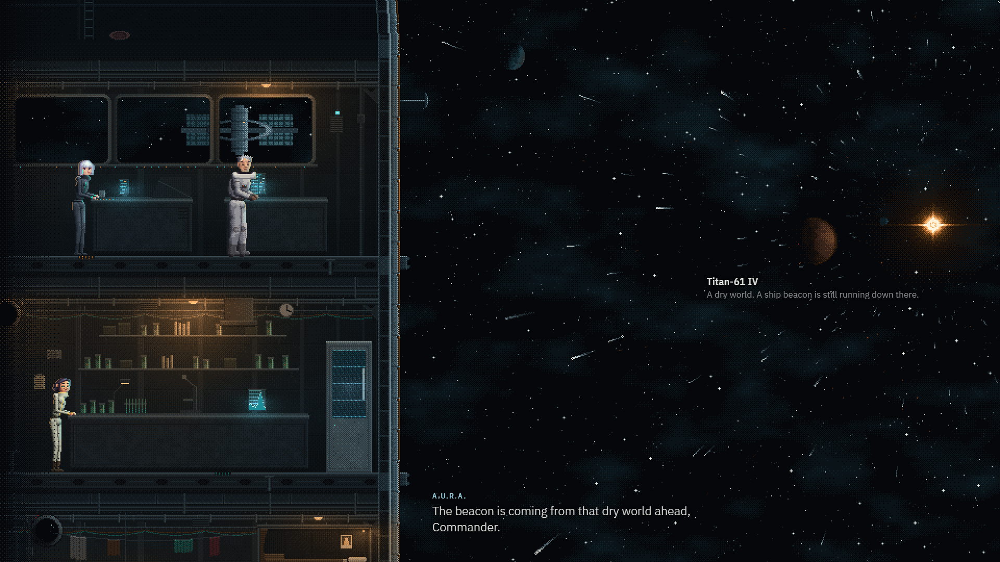
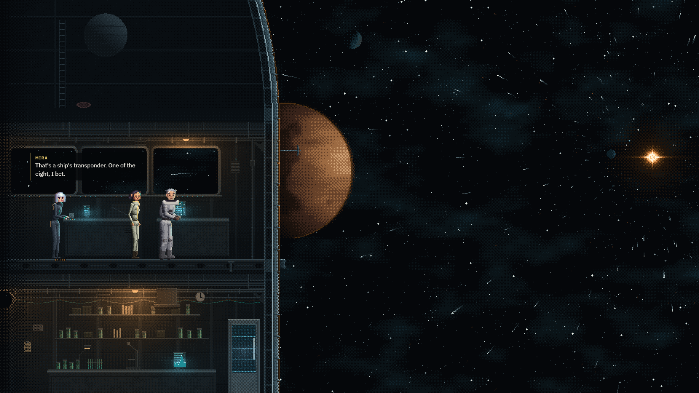
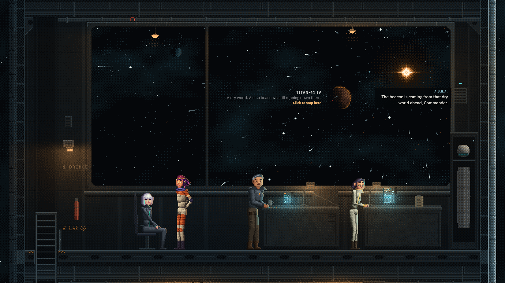
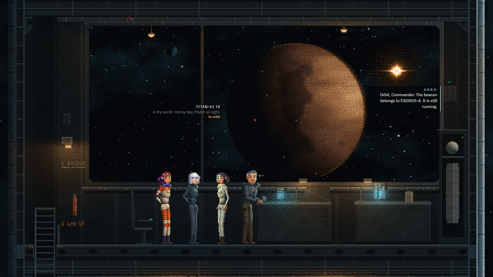
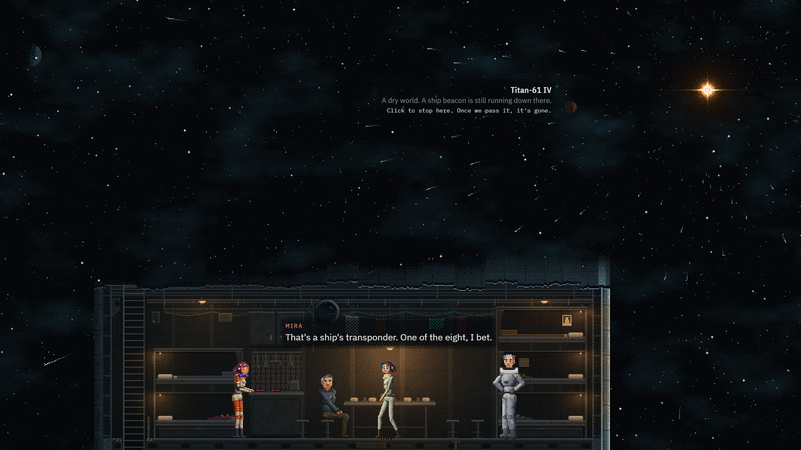
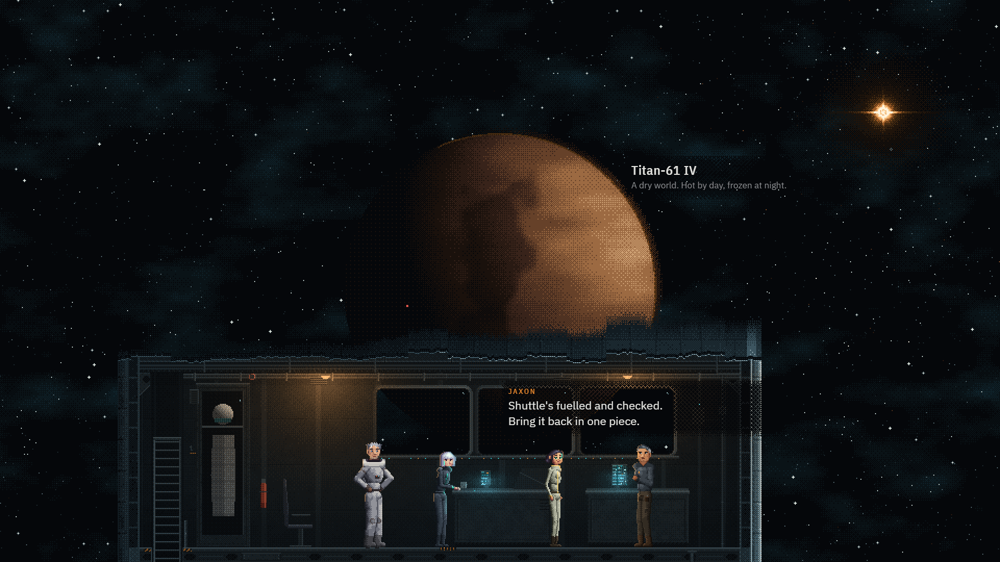
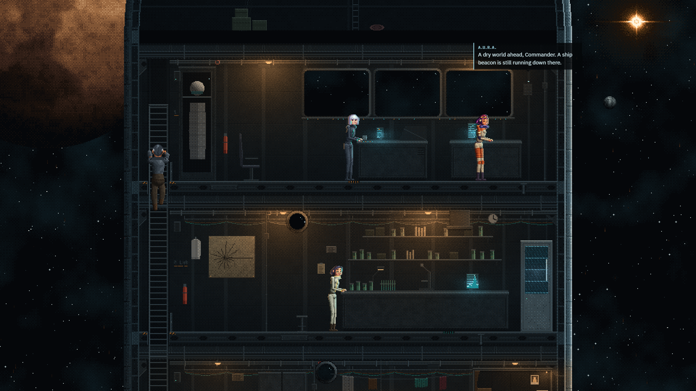
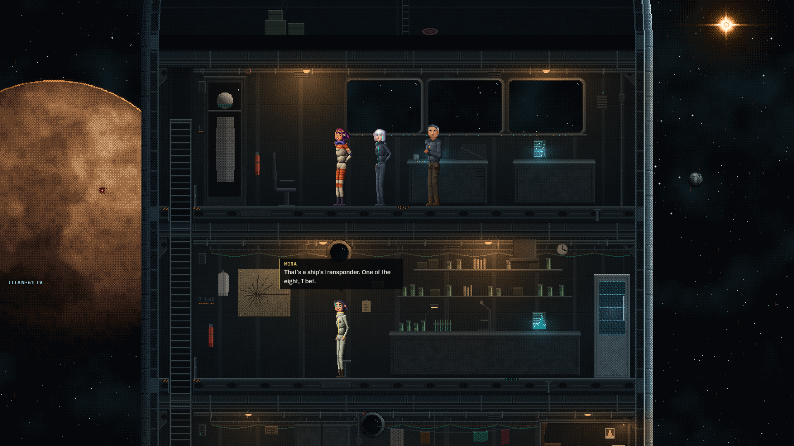

Ship and journey on one screen: four tries
Go with A. It is the layout you described: the ship on the left, the journey on the right, all under one sky. It keeps the v3 space and the living ship's decks at full size, and its best moment is the best in all four: a world slides behind our hull and shows up in the bridge window while Mira says her line. Before it goes into the game it needs whole decks on screen (the ladder and the chair are cut off now) and a fix for the gap in the nose where a world shows through.
ASide by side 34 / 40
The Lander on the left, space on the right. Worlds come out of the light, swell, then slide behind our hull and into the bridge window. Open it live


DThe bridge 33 / 40
Inside the bridge, with one big window onto the journey. It is the prettiest of the four, but it is a new bridge, not the living ship's, and the other decks stay out of sight. It would make the best close-up for when you stop at a world. Open it live


CDeck strip 30 / 40
Open sky on top and one deck along the bottom. The sky is as good as v3's, but you only see one deck at a time and the cut-away roof looks broken. Open it live


BNose up 30 / 40
The living ship as it is, with space down both sides. It feels like the most alive of the four, but the worlds get two thin strips, and in a smaller window those almost disappear. Open it live

